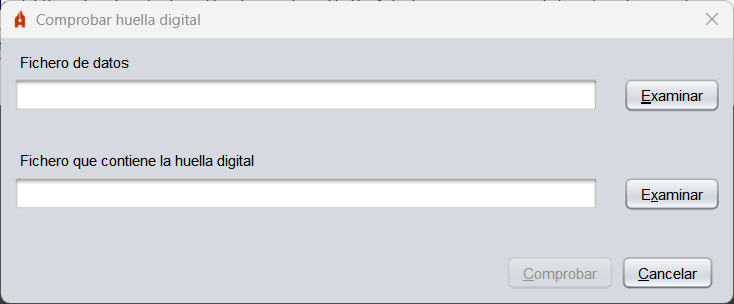
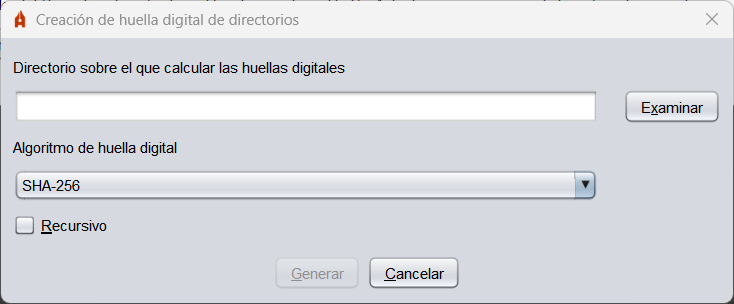

Plugins
Junto a Autofirma se distribuyen una serie de plugins que permiten agregar a la aplicación funciones
adicionales.
Cálculo y comprobación de huellas digitales
Este plugin agrega a Autofirma opciones para calcular la huella digital (hash) de un fichero
o de todos los ficheros de un directorio y comprobar esas mismas huellas que se han generado.
Una vez se instala el plugin, aparecerá en la barra de menús de Autofirma la opción "Huellas
digitales" con las distintas operaciones que se pueden realizar.
- Calcular huella digital: Permite calcular el hash de un fichero y guardarlo a disco.
El formato y la extensión del fichero de hash variará según el formato seleccionado.

- Fichero sobre el que calcular la huella digital: Fichero del que deseamos calcular el hash.
- Algoritmo de huella digital: Algoritmo de hash.
- Formato de la huella digital: Codificación empleada para guardar el hash:
- Hexadecimal en ASCII (Base16): La huella se almacenará como cadena hexadecimal termiada en 'h'.
- Base64: La huella se almacenará en Base 64.
- Binario: La huella se almacenará sin codificar.
- Copiar huella digital al portapapeles: Al activar esta opción, además de guardar el hash en
fichero, se copiará al portapapeles. El hash se copiará con la codificación del formato seleccionado o,
si se seleccionó el formato binario, en hexadecimal.
- Comprobar huella digital: Permite comprobar el hash de un fichero.

- Fichero de datos: Fichero al que corresponde la huella digital que se desea comprobar.
- Fichero que contiene la huella digital: Fichero con la huella digital.
- Calcular huella digital en directorio: Permite calcular el hash de los ficheros de un directorio.

- Directorio sobre el que calcular las huellas digitales: Directorio con los ficheros de los que queremos calcular la huella digital.
- Algoritmo de huella digital: Algoritmo de hash.
- Recursivo: Al activarla se calculará también el hash de los ficheros localizados en los subdirectorios del directorio seleccionado.
- Comprobar huella digital en directorio: Permite comprobar el hash de los ficheros de un directorio.

- Directorio: Directorio con los ficheros a los que corresponden las huellas digitales que se desean comprobar.
- Fichero de huellas digitales: Fichero con las huellas digitales que se van a comprobar.
Al instalar el plugin de huellas digitales en sistemas Windows, también se agregan las opciones de
generar y comprobar huellas digitales en el menú contextual de ficheros y directorios del sistema.
Las opciones que aparecen son:
- Generar huella digital: Esta opción aparece en el menú contextual de todos
los ficheros y directorios y permite generar el hash del fichero o de los ficheros del directorio.
- Comprobar huella digital: Esta opción aparece en el menú contextual de los ficheros de
hashes (.hash, .hashb64, .hashfiles y .hexhash) y permite seleccionar el fichero o directorio del
que se desea comprobar el hash.